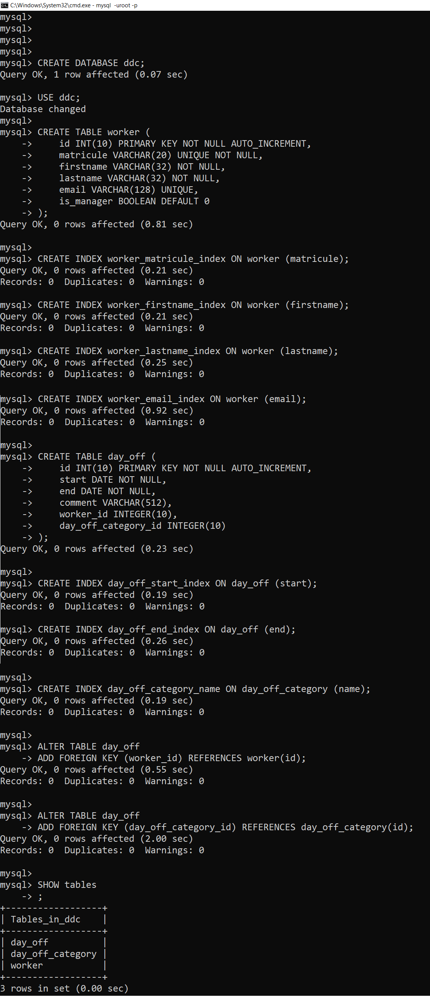

Objectifs de la leçon
Modélisation de la DB
Après cette leçon, l'étudiant saura
- Réaliser un diagramme relationnel à partir d'un diagramme de classes du domaine
- Détailler le diagramme relationnel
- Ecrire le script de création de database correspondant au diagramme relationnel
Durée estimée : 3 heures.
Type d'enseignement : ex-cathédra & démo & discussions.
Introduction
DBMS
Le modèle de base de données sert à décrite et documenter une base de données.
Les bases de données servent à stoker les données utilisées par les applications.
Nous appelerons SGBD (Système de Gestion de Base de Données, DBMS DataBase Management System) les logiciels qui gèrent les bases de données.
RDBMS
Nous nous limiterons aux bases de données relationnelles, et plus exactement les databases supportant le langage SQL, dont les principales sont:
- Oracle
- MS SQL Server
- DB2
- Sybase
- PostgreSQL
- mySQL
Ces logiciels sont des SGDBR (Système de Gestion de Base de Données Relationnelles, RDBMS Relational DataBase Management System). Ces logiciels sont généralement installés sur des serveurs.
Il y a aussi des logiciels qui servent à gerer de petites databases installés localement, sur un PC ou un mobile, comme:
- SQLite
- JavaDB
- MS Access
Modèle
Le modèle de DB permet de décrire la structure d'une database.
Domain Class
L'analyse fonctionnel produit entre autre un diagramme de classes du domaine, par exemple:
En première approche, chaque classe du diagram de classes du domaine sera une table de notre base de données.
Relational Model
Le modèle relationnel permet d'avoir une vision précise et résumée de la structure de la base de données, par exemple:

class => relational
La procédure pour obtenir ce diagramme consiste en:
- utiliser une convention de nommage pour les noms de table et de colonne, ici le "snake_case"
- créer une table par classe
- créer une colonne par attribut
- précisons le type, les plus courant sont "integer", "varchar", "date", "double"
- ajoutons la propriété "NOT NULL" si la colonne ne peut pas contenir de cellule sans valeur
- ajoutons la propriété "UNIQUE" si chaque valeur est unique (pas de double)
- ajoutons la propriété "INDEXED" si la colonne doit être indexé, nous indexerons les colonnes pour sur lesquelles des recherches doivent être effectuées, l'indexation accélère la sélection mais ralenti l'insertion.
-
ajouter une colonne nom, appelé "id" (convention),
qui sert d'idenficateur technique
nous lui ajoutons les propriétés:
- integer(11) : c'est un entier (d'autres solutions sont possibles pour des cas particuliersà
- PRIMARY KEY : c'est la clef primaire
- NOT NULL : l'identifiant ne peut pas être null
-
créons les relations entre les tables,
celles-ci correspondent aux relations entre les classes
- Les relations peuvent être "one-to-one"
- "one-to-many"
- "many-to-many" que nous verrons plus tard
- les relations sont physiquement des cléfs étrangères (foreign keys) d'une table vers l'autre
- par convention, le nom de la colonne "foreign key" sera $nom-de-la-table-référencée_id, par exemple worker_id est la "foreign key" qui référence la table "worker" via sa primary key "id".
Ensuite, il y a les exceptions, comme "Manager".
Exemple
TODO
Code
Une fois le modèle relationel réalisé, nous pouvons écrire ou même générer le code SQL qui crée la database.
En effet, beaucoup d'outils permettent de générer le code SQL. Visual Paradigm le permet, mais malheureusement pas dans la version "community". "mysql workblench" le permet aussi.
Le code correspondant à notre diagramme relationnel est le suivant
Le code est normalement parfaitement compréhensible, grâce au diagramme relationnel correspondant.
Notons que ce code est du code pour mysql, car certaines instructions du code sont du SQL particulier à mysql, par exemple "USE", "AUTO_INCREMENT".
Si nous exécutons ce code dans un client mysql, il crée la DB et les tables, voici la trace de l'exécutions du script de création de base de données. Démarrons d'abord le client mysql en ligne de commande:
mysql -uroot -p
ensuite, faisons un copy/paste du script:
Nous pouvons aussi exécuter le script en tapant la commande:
mysql -uroot -p create-ddc-db.sql
où create-ddc-db.sql est le fichier contenant le script SQL.